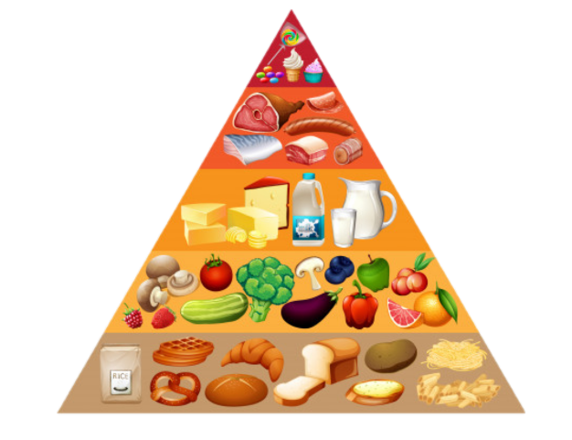
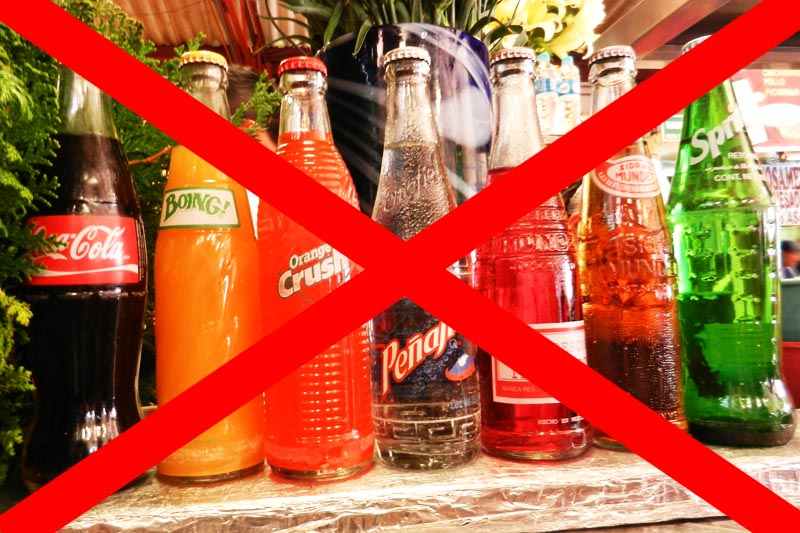
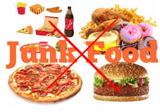
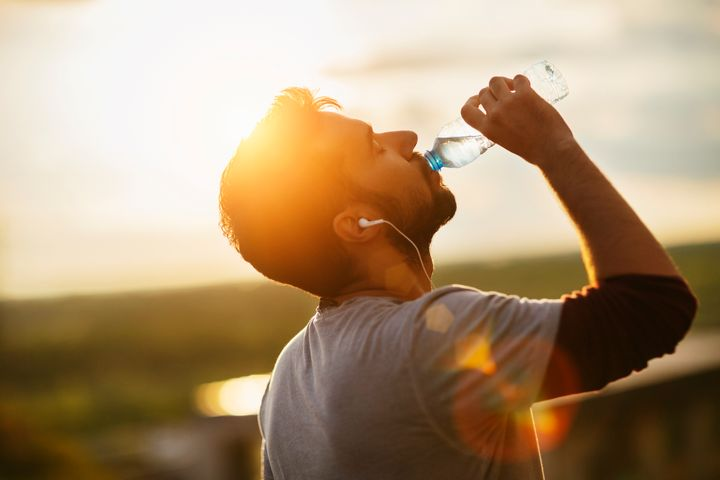
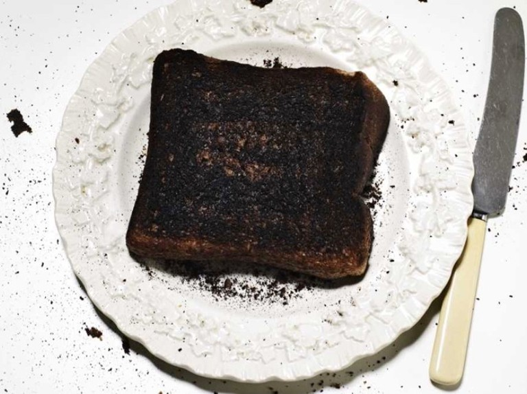
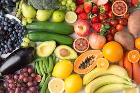
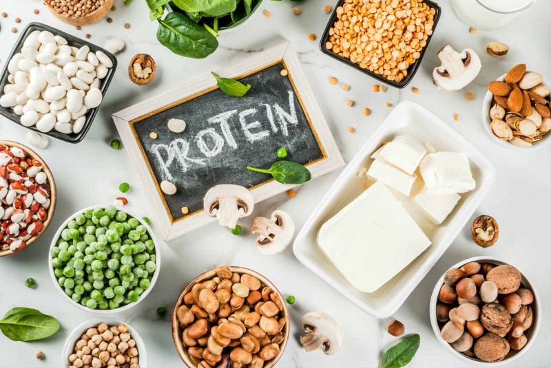
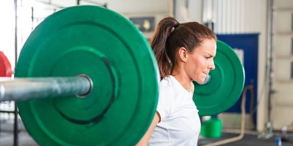

Food and Nutrition

| Nutrients |
Age group-6 to 18 |
Age group-19 to 45 |
Age group-45+ |
How is it helpful |
| Carbohydrates |
55% |
55% |
55% |
Carbohydrates are the body's main source of energy. In their absence, your body will use protein and fat for energy. It may also be hard to get enough fibre, which is important for long-term health. |
| Proteins |
20% |
25% |
20% |
Your body needs protein to stay healthy and work the way it should. More than 10,000 types are found in everything from your organs to your muscles and tissues to your bones, skin, and hair. |
| Vitamins |
20% |
22% |
24% |
Vitamins and minerals are considered essential nutrients—because acting in concert, they perform hundreds of roles in the body. They help shore up bones, heal wounds, and bolster your immune system. They also convert food into energy, and repair cellular damage. |
| Fats |
5% |
5% |
1% |
A small amount of fat is an essential part of a healthy, balanced diet. Fat is a source of essential fatty acids, which the body cannot make itself. Fat helps the body absorb vitamin A, vitamin D and vitamin E. |
Good health tips
| 1. Don't drink soft drinks |
Sugary drinks increase the sugar level of the body greatly leading to Diabetes and health problems. |
 |
| 2. Avoid processed junk food. |
Processed junk food are incredibly unhealthy and leads to serious health problems like Heart attack. |
 |
| 3. Get enough sleep. |
You should get quality sleep else if you will face hormonal issues and will not be fresh. |
|
| 4. Drink some water, especially before meals. |
Drinking water regulates your body temperature and makes our blodd less concentrated. |
 |
| 5. Don't eat overcooked or burnt food. |
Eating overcooked or burnt food damages our stomach and reduces our immunity. |
 |
| 6. Avoid bright lights before sleep. |
This dirupts our sleep and our eyes get damaged. |
|
| 7. Eat vegetables and fruits. |
Eating fruits and vegetables increase the fibre amount in our body and makes us more fit and active. |
 |
| 8. Eat enough protein. |
Eating more protein will boost your energy and will make your bones more stronger. |
 |
| 9. Lift heavy things. |
It increases the strenght of your muscles and improves your body composition. |
 |
| 10. Use plenty of herbs and spices. |
Eating herbs and spices leads to almost all health benefits especially your internal organs. |
 |